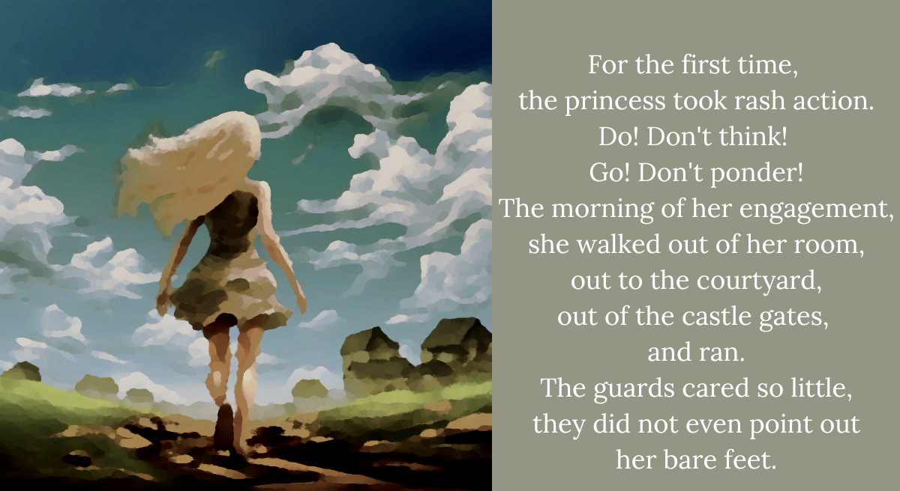

The princess tries to run away DDD2

Was this what freedom was like?
Could she have done this any time she wanted?
For the first day, till nightfall, she wondered
why she had never done something so wonderful.
But as the night cooled down, and she felt her toes freeze,
it was not much of a wonder anymore.
The newly rash are never as good at winging it,
as the compulsively impulsive.
No money, no thick clothes, and not even shoes,
nor anything to identify her as royalty.
How could she even ask to impose on the commoners?
They did not like her. And she had done nothing for them.
She had done nothing to them, of course.
But that didn’t help her much.
That night, she huddled on a hill, as winter made itself known.
Ahem.
“O-okay, that one was pretty sad,” I say, clearing my throat. “Cheap and effective. Classic kid’s story move.”
Shiori isn’t holding it in nearly as well. Evidently a sucker for just this kind of story, and she’s sniffling a bit.
“Oh c’mon! They used every trick in the book there!” I say.
“Yeah, but it’s still kinda sad!” Shiori says, wiping her eyes. “But that didn’t open the door! So, we gotta go back anyway!”
“Yeah, I know, I know. Um, I want to… I want to go back to the queen question. The choice about what she was like.”
ENDING 6 REACHED: Legally distinct little matchstick girl
It seems you’ve reached a dead end. But fret not! Our two lovely main characters are still alive.
RETURN